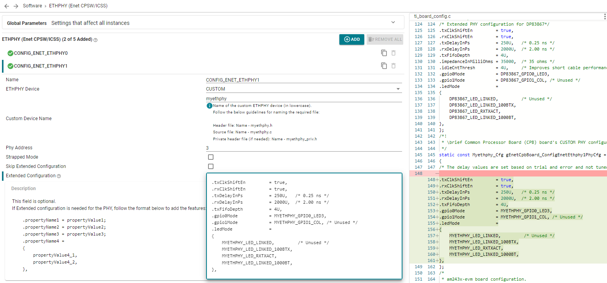
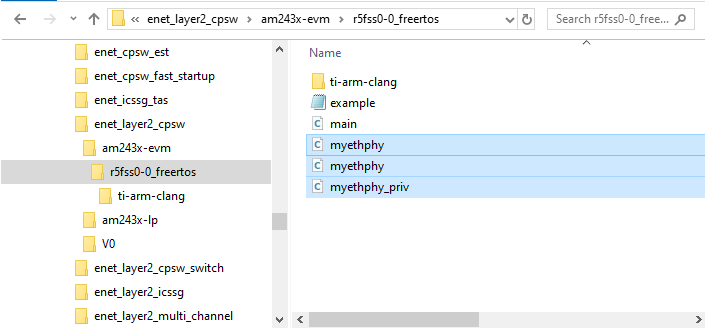
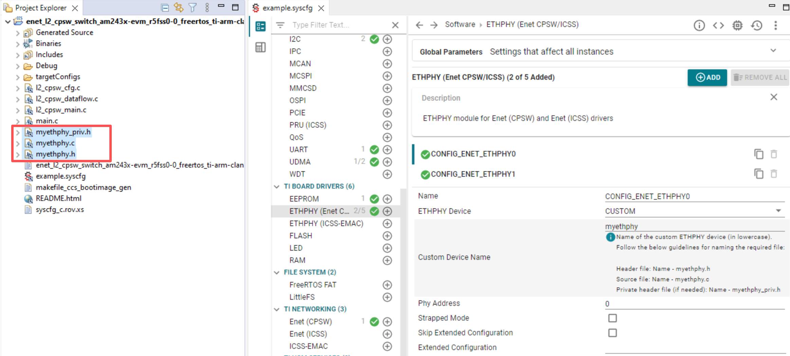

New PHY Driver implemetation
The following list of steps is provided as guideline when adding a new PHY driver for a device which is not supported by Enet LLD.
- Note
- For the list of PHY drivers supported by Enet LLD, refer to Using Ethphy Devices Supported Out-of-Box
- Select "CUSTOM" (ETHPHY (ENET CPSW/ICSS) -> ETHPHY Device) option in Sys-Cfg gui. This will modify the auto-generated ti_board_config.c file based on the "Custom Device Name" specified in the GUI.
- Add the PHY extendedCfg (if needed) to the "Extended Configuration" text box for the custom device. This configuration will be automtically updated in ti_board_config.c file.

- Copy the sample source file, public PHY specific header file and private header file (if needed) from
source/networking/enet/core/internal_docs/templates into the directory that contains your example main.c file.
- This header file should have the device extended configuration structure definition (if applicable) as well as auxiliary structures or enumerations.

- In the source file, modify the function pointers of
Phy_DrvObj_t structure if needed for device specific implementation.
- Look for reuse of PHY generic functions if a device specific implementation is not needed.
- Add the required device specific functionality to the sample functions. Refer to the existing code in
source/board/ethphy/enet/rtos_drivers/src for driver source files.
Build the project with new PHY driver
- When using CCS to build, add the source file and header files to the CCS example.
- Select the file operation as "Link to files" and select yes for Adjust Compiler Include-Paths

- When using makefiles to build, add the PHY source file to "FILES_common" and header file path to "INCLUDES_common" in the example makefile.
FILES_common := \
l2_cpsw_main.c \
main.c \
myethphy.c \ /*New PHY source file*/
...
INCLUDES_common := \
-I../ \ /*Path to PHY header files*/
-I${CG_TOOL_ROOT}/include/c \
-I${MCU_PLUS_SDK_PATH}/source \
...
Back To Top
API
Ethernet PHY Driver
 1.8.20
1.8.20